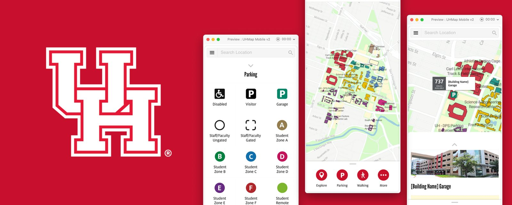
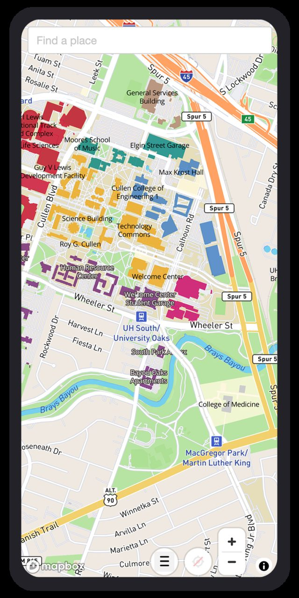
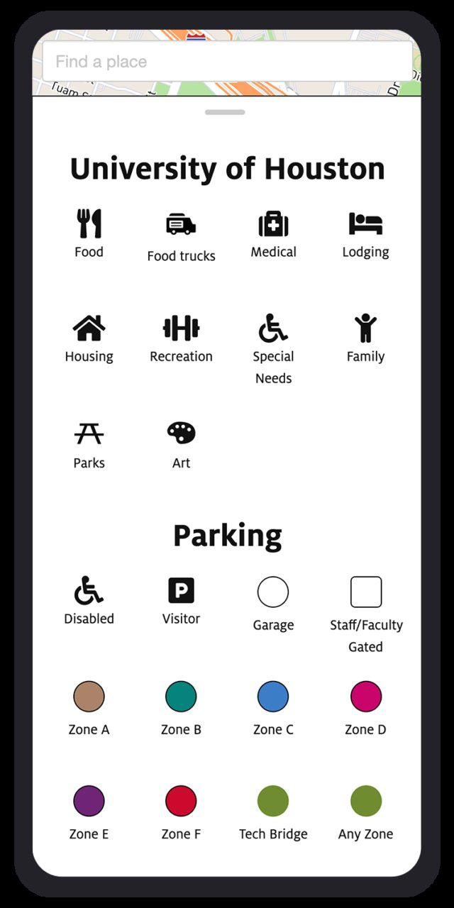
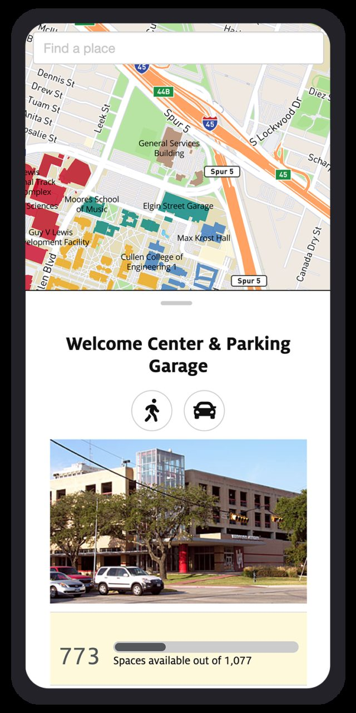
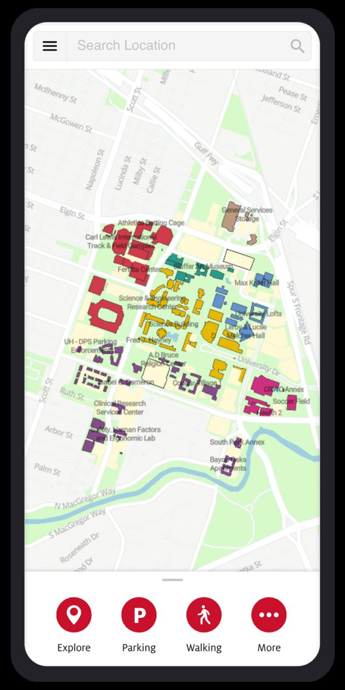

Case Study
UH Mobile Maps
The University of Houston is a public university helping students pursue learning, discovery, leadership, and engagement. This project found opportunities to present parking capacity, accommodate multiple location services, and enhance the overall experience.

Situation
The UH maps used third party software called MapBox, which gives developers the tools to build mapping, navigation, and search experiences within the UH campus. The mapping technology works with the Bootstrap framework as a graphical user interface to bridge the interaction between the user and the technology.
Upon joining the team, the map was published without any user research to determine its usability, applicability, and improvements. My responsibility was to plan and perform user research to identify user objectives, assess UI issues, prototype, design, and validate through user testing.



Process
After I gathered the requirements and objectives, I followed this process to uncover issues and opportunities:
- Assessment. Conducted user interviews and explored the existing map.
- Defined the problem. Identified pain points and issues.
- Ideation & design. Hypothesized, created, and proposed potential solutions.
- User testing. Developed a plan, gathered participants, and performed testing.
Assessment
I explored and navigated the maps to determine the questions to ask, then conversed with peers and random users about their experience:
- What are the areas you look for on UH maps?
- What action prevents you from your main goal?
- What elements confused you?
Define the Problem
Once I synthesized their feedback and available data, I identified issues that needed attention:
- Architecture & organization
- Endless & indistinguishable icons
- Missing key functionality & services
I determined three areas to solve: user interface scalability, garage parking capacity, and the end to end experience.
Ideation & Design
I worked to find the best solution, from sketching ideas to low and high fidelity screens. Design considerations included modular components, user journey, expansion and scalability, and visual design.



User Testing
I determined the metrics and number of users, then performed user tests to validate the potential solution. Five student participants completed five scenarios, starting from the UH Maps landing page, reading their activities and thought process aloud. Each task was measured by task time, pass or fail, and complexity.
Test Results
I developed a usability testing strategy using five participants and five tasks with an Adobe XD interactive prototype on desktop and laptop, instead of mobile devices. There were no baseline metrics to compare against the existing UH maps, but we now had a data point to guide the course of action and compare future iterations.
Scenario 1: Locate options to eat on campus
- Task: You want to find a place to eat on campus. Identify the options that are available.
- Task time: Average 56.6s, high 180s, low 9s
- Pass: 80%
- Difficulty rating: 1.8 (1 easy to 5 hard)
- Observation: One person commented that the word "Explore" was not something she associated with food.
- Recommendation: Keep as is.
Scenario 2: Find a list of parking garages
- Task: You are on the way to visit UH campus and need a place to park. Find a list of parking garages that you can choose from.
- Task time: Average 19.8s, high 45s, low 8s
- Pass: 60%
- Difficulty rating: 2 (1 easy to 5 hard)
- Observation: The color indicator related to district was a bit confusing. Users did not understand the purpose until they saw the connection to the building name. Two users interpreted the scenario and task differently between visitors and garages.
- Recommendation: Clarify the difference between visitor parking and garage, since a visitor can park in the garage.
Scenario 3: Identify the number of parking spaces available
- Task: Prior to getting to UH, you want to make sure there is enough parking available in a garage. Identify the number of parking spaces available in a garage.
- Task time: Average 11s, high 20s, low 7s
- Pass: 100%
- Difficulty rating: 1 (1 easy to 5 hard)
- Observation: No major issue.
- Recommendation: Keep as is.
Scenario 4: Share your location with a friend
- Task: You are meeting a friend on campus. You have arrived and are currently parked in a garage, but your friend has not arrived and is lost. Identify the menu option that will let you share your current location with your friend.
- Task time: Average 44.4s, high 84s, low 12s
- Pass: 60%
- Difficulty rating: 3.8 (1 easy to 5 hard)
- Observation: Everyone went to the "More" option and was looking to share from the list view rather than the detail page. Some users could not find the geolocation button (the menu covered it). One person mentioned no drag and drop pin to view and share location.
- Recommendation: Add the share option in the More option and list page. Add the share and move geo button above the menu or below the search bar.
Scenario 5: Locate alternative modes of transportation
- Task: You are on UH campus and you need a way to get around other than walking. Locate information about different modes of transportation available to you.
- Task time: Average 13.2s, high 26s, low 8s
- Pass: 100%
- Difficulty rating: 1.8 (1 easy to 5 hard)
- Observation: One user commented that the "More" option is associated as a configuration or setting. One identified the alternative transportation, but he was looking for shuttle transportation.
- Recommendation: Add shuttle in the alternative modes of transportation.
Conclusion
Ideally, establishing baseline metrics on the existing maps would have allowed a viable comparison against the new solution, but time and resources were limited.
Transportation methods and terminology were the main improvements needed based on feedback. During user testing, users frequently looked for a shuttle, geolocation buttons, pin-drop view, and share options. The terminology used was also a prominent issue to be re-evaluated. The "Explore" option was not something a user would associate with food, and the "More" button correlated as an additional configuration or setting.
My analysis provided a clear line of sight to gaps, which will help navigate future iterations, provide evidence based improvements, and formulate educated recommendations. I minimized assumptions by testing and focused on the end user's perspective. This process aimed to help make an informed decision on the next step: extend UI/UX from mobile to desktop platform.
Like what you see? Let's talk.